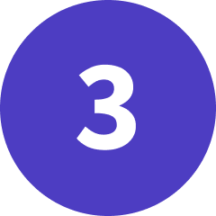

La fase Empatizar
En esta fase se pretende estudiar el problema a profundidad centrado en el usuario, el problema
elegido fue:
Violencia de género en la vía pública.
La fase Definir
Después de estudiar el problema, pasamos a definir la información mas importante y consolidar los
puntos clave del problema para empezar a idear la solución.

La fase Idear
Una vez tengamos bastante información y comprendamos a los usuarios, pasamos a imaginar y
compartir
varias soluciones entre el equipo.
La fase Prototipar
¿Ya tenemos ideas?, hacemos un filtro de las ideas posibles y empezamos a prototipar las ideas ya
sea
un producto digital o físico.
La fase Testear
¡Ya tenemos el prototipo!, vamos a testearlo con personas que sean propensas a usar el producto o
servicio (tengan el mismo problema que se soluciona).
La fase Implementar (Extra)
Esta es una fase extra, aquí simplemente realizamos ajustes a nuestro prototipo hasta que cubra
todas
las necesidades de los usuarios.